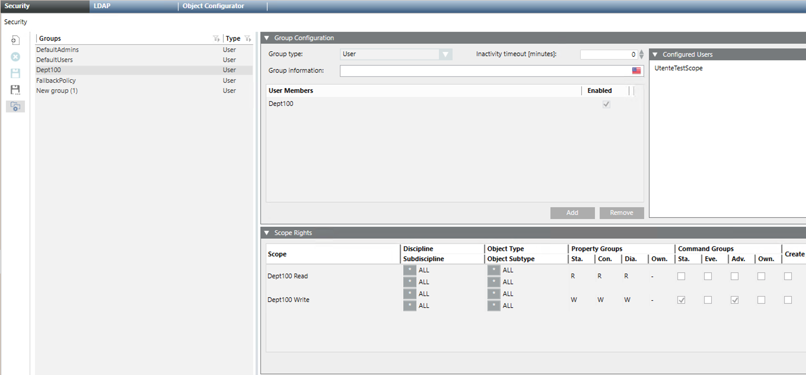

Configure Scope Rights for Running Events Reactions Scripts
- Select Project > System Settings > Security.
- The Security tab displays.
- In the Groups list, select the scripts user group previously configured. For example, Dept100.
- In the Scope Rights expander, assign the appropriate scopes included under Scopes, and specify the required scope rights settings.
Use case: Assign the scopes of the events reactions script, and set the read and write access rights.
a. Drag the scope with read access rights (for example, Dept100 Read) to the Scope field. Then in Property Groups, set Sta. (status), Con. (configuration), and Dia. (diagnostics) to R (read).
b. Drag the scope with write access rights (for example, Dept100 Write) to the Scope field. Then in Property Groups, set Sta. (status), Con. (configuration), and Dia. (diagnostics) to W (write); in Command Groups, select the check boxes Sta. (status) and Adv. (advanced). - Repeat the preceding step for any other scopes you want to link to the scripts user group.
- Restrict the scope by setting event rights and application rights appropriately.
Use case: The events reactions script will not issue alarm-handling commands and will not access applications data. Consequently, event rights and application rights can be disabled.
a. In the Event Rights expander, deselect the Categories check box.
b. In the Application Rights expander, deselect the Applications check box. - Click Save
 .
.
